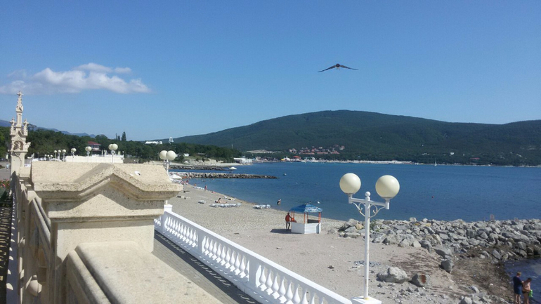

Село
Кабардинка
Набережная в Кабардинке.jpg
44°38′55″ с. ш. 37°55′55″ в. д.HGЯO
Страна Россия
Субъект Федерации Краснодарский край
Муниципальное образование Город-курорт Геленджик
Сельский округ Кабардинский
История и география
Основан в 1836 году
Высота центра 28 м
Тип климата средиземноморский
Часовой пояс UTC+3
Население
Население ↗7550[1] человек (2010)
Национальный состав русские, греки, украинцы, армяне
Цифровые идентификаторы
Телефонный код +7 86141
Почтовый индекс 353480
Код ОКАТО 03 408 804 001
Код ОКТМО 03 708 000 151
Кабардинка на картеКабардинкаКабардинка
Кабардинка на картеКабардинкаКабардинка
Commons-logo.svg Аудио, фото и видео на Викискладе
Кабарди́нка — село (ранее посёлок городского типа) в Краснодарском крае. Входит в состав муниципального образования город-курорт Геленджик. Административный центр Кабардинского сельского округа.
По количеству солнечных дней и отсутствию туманов Кабардинка напоминает южный берег Крыма. Среднегодовая температура +12,4 °С. Море, горы и леса уготовили Кабардинке удивительный климат. Он благоприятен для лечения и отдыха.
Кабардинка — самое сухое место не только в Геленджикском, но и в более южных районах Чёрного моря. Курортный сезон длится с мая по ноябрь, именно в это время здесь стоит сухая и тёплая погода.
Первое упоминание о месте, где сейчас находится Кабардинка, относится к V—VII векам до н. э. Об этом свидетельствуют археологические находки, которые были обнаружены здесь в 1960—1970 годах. Это были обломки амфор и различных сосудов, в которых древнегреческие купцы возили вино. Древнегреческие колонисты усиленно осваивали все побережье Чёрного моря, строили города-колонии. Кабардинка также не стала исключением: здесь были найдены следы двух небольших античных поселений.
Основание
В ходе Кавказской войны (1817—1864) Россия стремилась стать полновластным хозяином на Кавказе и Черноморском побережье. Упорное сопротивление горцев заставило российские власти строить на Черноморском побережье Кавказа военные укрепления. Кабардинское укрепление было заложено и построено в 1836 году. Вначале оно было названо Александрийским. Но в это же время был построен форт Александрия (Сочи), и общность названий вносила путаницу. Поэтому император Николай I издал приказ.
Граф А. И. Чернышёв — Н. Н. Раевскому. 15 мая 1839 г. № 296262…
Его Величеству благоугодно было высочайше повелеть… В отвращение недоразумений, происходящих от сходства названий укрепления Александрийского и форта Александрия, назвать первое — Кабардинским, а второе — Навагинским. Учесть, что название Кабардинский дано было полку по известной кавказской провинции Кабарда, одной из первых вошедших в состав России.
(Архив Раевских, стр. 142—143.)
Таким образом, получается, что своим названием Кабардинка обязана Кабарде.
После окончания Кавказской войны сюда стали прибывать в качестве колонистов греки и армяне из Турции, увидевшие в России свою защитницу. Они заселяли пустые, одичавшие места и успешно возрождали их к новой жизни. Так близ развалин Кабардинского укрепления и места, где было когда-то черкесское селение, занятое после переселения черкесов в Турцию греками, возникла Кабардинка. Само же название «Кабардинка» официально утвердилось за поселением в 1869 году.
